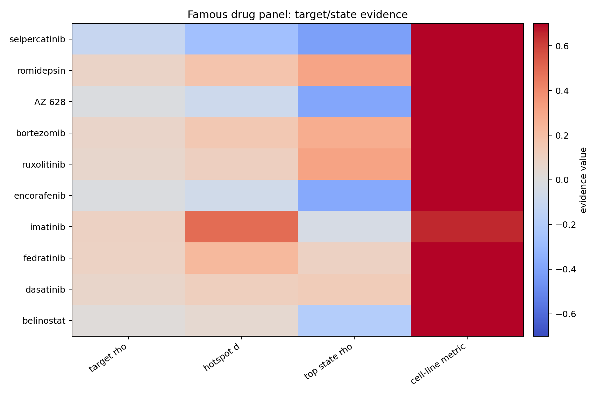
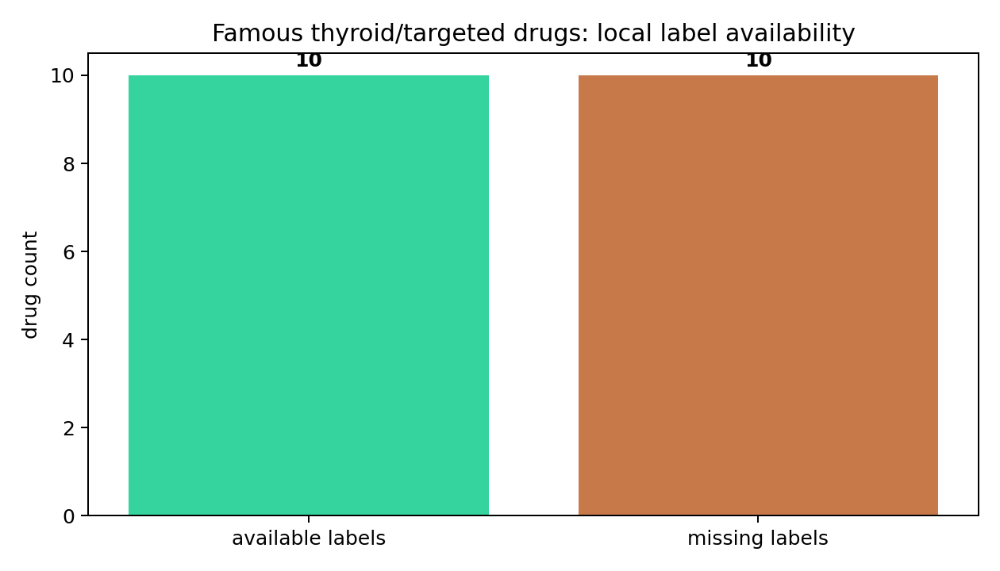

{kind=link}
{kind=link}
01Visual Result



02Takeaway
Selpercatinib becomes the strongest famous-drug target-program overlap signal in this run: RET/MAPK output program is negatively associated with predicted vulnerability score and strongly state-linked to low thyroid differentiation. This is a computational hypothesis only, but visually and biologically worth reviewing.
| Drug | Class | Target/state interpretation | Use |
|---|---|---|---|
| Selpercatinib | target-program overlap candidate | RET/MAPK program plus low-differentiation state overlap. | First famous-drug visual hypothesis to inspect. |
| Encorafenib | state-overlap candidate | BRAF/RAF inhibitor score aligns more with low differentiation than direct target expression. | BRAF/MAPK state validation hypothesis. |
| AZ 628 | state-overlap candidate | Consistent with earlier DM1/TDS/RAI-low state signal. | Retained research RAF comparator. |
| Bortezomib | state-overlap candidate | Proteasome/stress model overlaps RAI/proliferation-related spatial programs. | Stress/proliferation control hypothesis. |
| Romidepsin/Ruxolitinib | state-overlap candidates | HDAC/JAK models show epithelial or differentiation-state associations. | Exploratory epigenetic/immune-state hypotheses. |
03Drugs Modeled
| Drug | Source | Metric | n labels | Target program |
|---|---|---|---|---|
| Encorafenib | PRISM | LFC | 879 | BRAF/RAF inhibitor program |
| Selpercatinib | PRISM | LFC | 859 | RET inhibitor program |
| Imatinib | PRISM | LFC | 883 | ABL/KIT/PDGFR inhibitor program |
| Bortezomib | GDSC2 | log2IC50 | 627 | Proteasome / unfolded-protein-stress program |
| Romidepsin | GDSC2 | log2IC50 | 486 | HDAC / epigenetic-immune program |
| Belinostat | GDSC1 | log2IC50 | 572 | HDAC / epigenetic-immune program |
| Ruxolitinib | GDSC2 | AUC | 654 | JAK/STAT inflammatory program |
| Fedratinib | GDSC1 | log2IC50 | 420 | JAK/STAT inflammatory program |
| Dasatinib | GDSC2 | log2IC50 | 143 | SRC/ABL kinase program |
| AZ 628 | PRISM | LFC | 885 | Research RAF inhibitor program |
04Missing Famous Drugs
These are not modeled yet because the prepared local response-label layer did not contain sufficient direct labels.
| Drug | Target | Status |
|---|---|---|
| Dabrafenib | BRAF | Need response data ingestion. |
| Trametinib | MEK1/2 | Need response data ingestion. |
| Vemurafenib | BRAF | Need response data ingestion. |
| Lenvatinib | VEGFR/FGFR/RET/KIT | Found in clinical text tables, not prepared cell-line labels. |
| Sorafenib | RAF/VEGFR/KIT | Only combination/local clinical text found; no direct prepared label. |
| Cabozantinib/Vandetanib/Pralsetinib | RET/VEGFR/MET axis | Need response data ingestion. |
| Larotrectinib/Entrectinib | NTRK/ROS1/ALK | Need response data ingestion. |
05Files
| Artifact | Path |
|---|---|
| Famous panel tasks | project/spatial_drug_vulnerability/results/tables/famous_drug_panel_tasks.tsv |
| Famous evidence matrix | project/spatial_drug_vulnerability/results/tables/famous_drug_target_state_evidence_matrix.tsv |
| Priority slide scores | project/spatial_drug_vulnerability/results/tables/famous_drug_priority_slide_scores.tsv |
| Missing label table | project/spatial_drug_vulnerability/results/tables/famous_drug_panel_missing_labels.tsv |
| Markdown report | project/spatial_drug_vulnerability/results/reports/FAMOUS_DRUG_SPATIAL_VULNERABILITY_PANEL_REPORT.md |
06Boundary
Allowed: target-aware hypothesis generation, visual prioritization, spatial heterogeneity review, wet-lab validation roadmap.
Not allowed: clinical treatment recommendation, true measured IC50 per spot, patient selection, or causal response claim without perturbation validation.